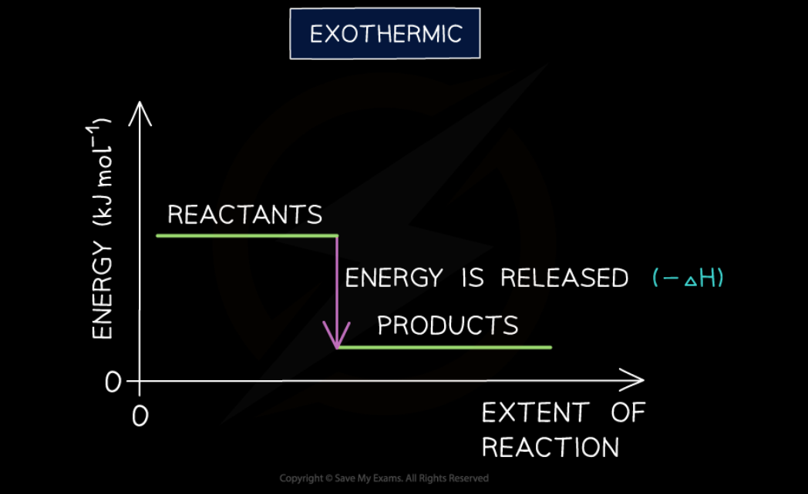
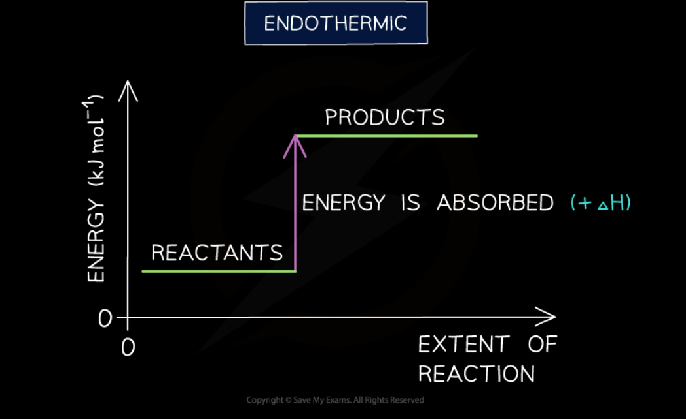
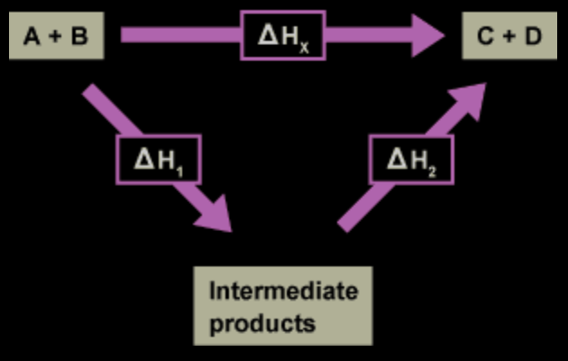

The total chemical energy inside a substance is called the enthalpy (or heat content)
When chemical reactions take place, changes in chemical energy take place and therefore the enthalpy changes.
An enthalpy change is represented by the symbol ΔH (Δ = change; H = enthalpy)
An enthalpy change can be positive or negative.
Exothermic Reactions
A reaction is exothermic when the products have less energy than the reactants.
Heat energy is given off by the reaction to the surroundings
The temperature of the environment increases - this can be measured with a thermometer.
The energy of the system decreases.
There is an enthalpy decrease during the reaction so ΔH is negative

Endothermic reactions
A reaction is endothermic when the products have more energy than the reactants.
Heat energy is absorbed by the reaction from the surroundings.
The temperature of the environment decreases - this can be measured with a thermometer.
The energy of the system increases
There is an enthalpy increase during the reaction so ΔH is positive

Hess's Law
Hess’s law of heat summation states that for a chemical equation that can be written as the sum of two or more steps, the enthalpy change for the overall equation equals the sum of the enthalpy changes for the individual steps.
In other words, no matter how you go from given reactants to products (whether in one step or several), the enthalpy change for the overall chemical change is the same.
Consider the following reaction:
\(\ce{A + B -> C + D}\)\(\; \; \; \; \; \; \Delta \text{H}_\text{x}\)
The enthalpy change for the reaction that forms products C + D directly (\(\Delta \text{H}_\text{x}\)) will be the same as the sum of the enthalpy changes for the production of C + D via an indirect route where intermediate products are formed and subsequently react to produce C + D.
This is shown in the diagram below.

One method of calculating an enthalpy change for a process involves rearranging a set of given reaction equations with known values.
The following points must be noted when manipulating equations:
The enthalpy change for the process (ΔH) is independent of the route taken (This is Hess’s law).
The enthalpy change (ΔH) is proportional to the quantities of reactants and products. For example, burning twice as much fuel will result in twice the enthalpy change for the process.
If a reaction is reversed then the sign of the enthalpy change must also be reversed.
Changing the physical state of any reactant (or product) will involve an enthalpy change.